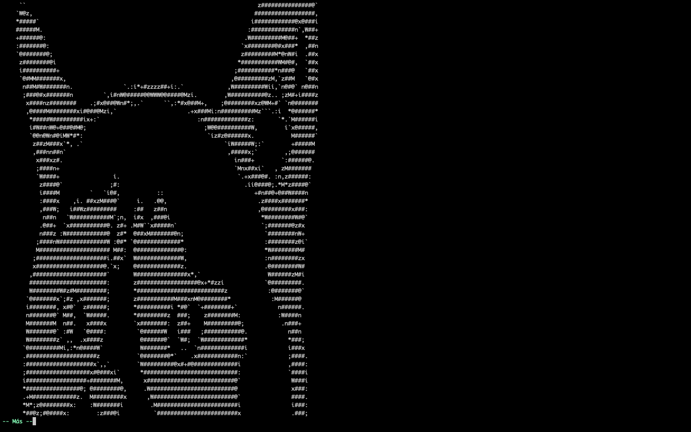
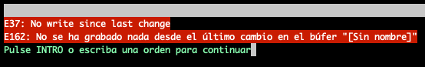

Puedes abrir Neovim (nvim) desde tu terminal con el comando:
Para abrir un archivo en nvim solo necesitas pasarle un archivo como argumento desde tu terminal:
Cuando abres Neovim, el modo por defecto es el normal.
Nota; Cada vez que sientas que te perdiste, presiona Esc al menos tres veces, así podrás regresar al modo normal.
Neovim tiene 4 modos principales:
Para entrar y salir de cada modo:
Para ejecutar smile entraremos en modo de comandos pulsando : , escribiremos smile y pulsamos enter;
+ +
(Para salir pulsa dos o tres veces Escape)

Para salir del editor usaremos el comando :q
+ +
(Si te has dado cuenta, vim no te deja salir sin guardar)
(En este caso puedes forzar la salida o guardar antes de salir)

Para forzar la salir del editor usaremos el comando q!
+ + +Para guardar el fichero usaremos el comando :w y para salir guardando usaremos el comando :wq
+ +
(Y si, se pueden usar diferentes comandos a la vez)
+
+
+
Para para darle nombre a un fichero sin nombre (también llamado como “Guardar como”), usaremos el comando: w seguido del nombre
+ + +
(¿Como saldrías guardando y asignando un nombre?)
(Si pensaste en usar el comando :wq seguido del nombre, acertaste)
(Para salir guardando todos los ficheros abiertos en vim puedes usar :wqa)
(a de all)